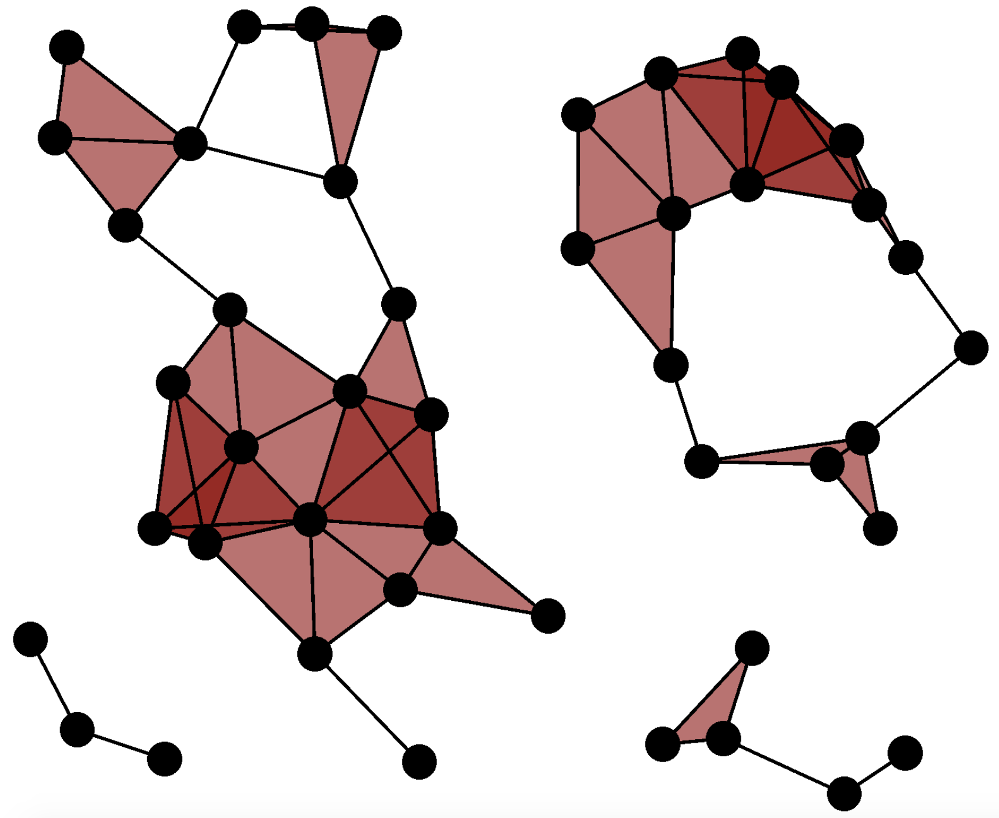

One of the most popular (read: computationaly efficient) thickenings of a point cloud used in TDA is the following:
Definition. For a finite metric space X, and a scale parameter r >= 0, the Vietoris-Rips Complex (or simply, VR Complex), denoted by VR(X;r) is the complex that contains a finite simplex \sigma \subseteq X whenever diam(\sigma) < r.
 |
Here we make two important remarks about VR Complexes:
Remark 1. For every scale parameter r >= 0, the complex VR(X;r) is simplicial. That is, it satisifes the properties: (1) If \sigma is in VR(X;r) and if \tau is in \sigma, then \tau is in VR(X;r), and (2) If \sigma and \tau are in VR(X;r), then \sigma \cap \tau is in VR(X;r).
Remark 2. For any scale parameters r ' >= r >= 0, there is a natural inclusion map VR(X;r) \to VR(X;r'). That is, any inceasing sequence of scale parameters gives rise to an increasing sequence of simplicial complexes, called a VR simplicial filtration.
These remarks are necessary in a technical sense because they prove that one can examine the persistent homology the point cloud.
The importance of the VR simplicial filtration is solidified by an important theorem, proving that the resulting persistent homology barcodes from a VR simplicial filtration are "stable".
Theorem. For topological spaces X and Y, we have |X-Y| <= 2|PH(X)-PH(Y)|.
One often likes to imagine that a point cloud X was created through a (noisy) sampling from a manifold M. In this case, the stability theorem tells us that the barcodes of X and the barcodes of M cannot be too different.
Theorem. X \to M implies PH(X) \to PH(M) for any manifold M.
However, there are very few manifolds M for which the barcodes PH(M) are known. Towards this end, we were able to compute PH(M) for M = P_n, the boundary of any regular polygon, equipped with the Euclidean metric of the plane.